Os Lusíadas
Luís de Camões
O Classicismo surgiu durante o Renascimento e buscou recuperar os valores culturais da Antiguidade Greco-Romana. A razão, o equilíbrio e a valorização do ser humano tornaram-se princípios fundamentais da produção artística.
O período foi marcado pelo fortalecimento das monarquias nacionais e pelas Grandes Navegações, que expandiram o conhecimento geográfico e cultural europeu.
O crescimento do comércio e da burguesia impulsionou o desenvolvimento das cidades e favoreceu a difusão das ideias renascentistas.
Luís de Camões
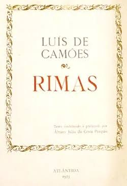
Luís de Camões
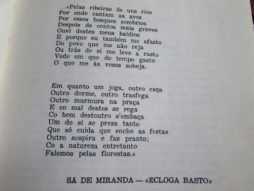
Sá de Miranda
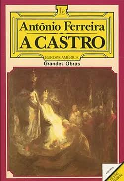
Antônio Ferreira
Narrativas grandiosas em verso que celebram os feitos heroicos e a história de uma nação. Exemplo máximo: Os Lusíadas.
Composições em verso focadas no amor, na contemplação e na filosofia. Utiliza formas clássicas como o soneto (medida nova).
Dramas clássicos inspirados nos moldes greco-romanos, estruturados em atos e focados no conflito moral e no destino humano.
Textos em verso de caráter pessoal, epistolar ou lamentatório, usados para refletir sobre a moralidade e os costumes da época.
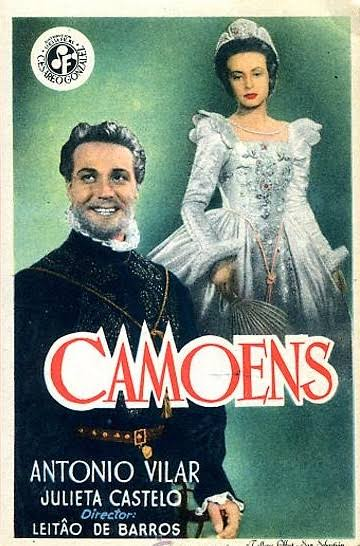
1946 • Dir. José Leitão de Barros
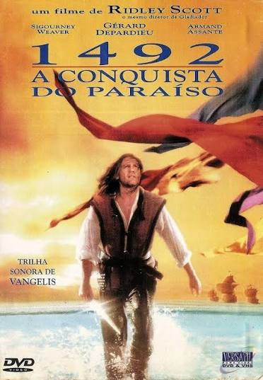
1992 • Dir. Ridley Scott
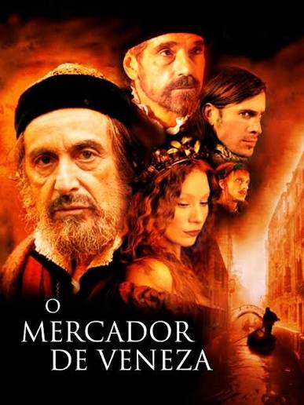
2004 • Dir. Michael Radford
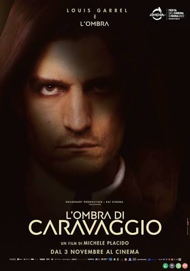
2022 • Dir. Michele Placido
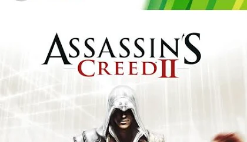
2009 • Ubisoft
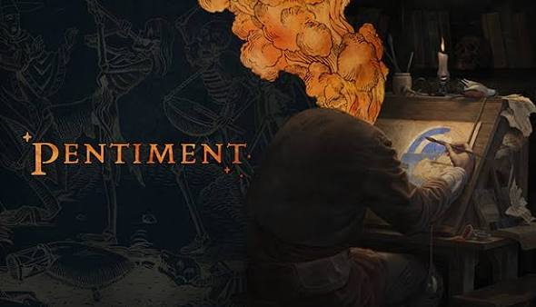
2022 • Obsidian Entertainment
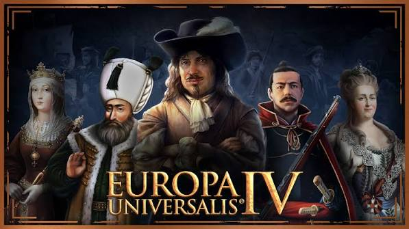
2013 • Paradox Development
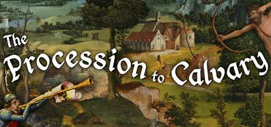
2020 • Joe Richardson
"Os Lusíadas", de Luís de Camões, é considerado o maior poema épico da língua portuguesa e narra a viagem de Vasco da Gama às Índias, exaltando as conquistas marítimas portuguesas.